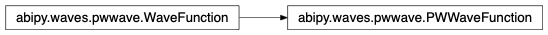
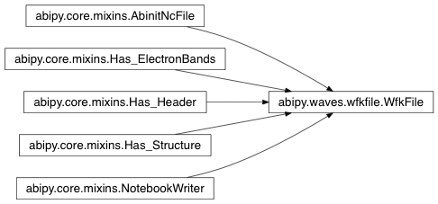

pwwave Module¶This module contains the class describing a planewave wavefunction.
abipy.waves.pwwave.PWWaveFunction(structure, nspinor, spin, band, gsphere, ug)[source]¶Bases: abipy.waves.pwwave.WaveFunction
This object describes a wavefunction expressed in a plane-wave basis set.
Inheritance Diagram
norm2(space='g')[source]¶Return \(||\psi||^2\) computed in G- or r-space.
braket(other, space='g')[source]¶Returns the scalar product <u1|u2> of the periodic part of two wavefunctions computed in G-space or r-space, depending on the value of space. Note that selection rules introduced by k-points is not taken into accout.
| Parameters: |
|
|---|
get_interpolator()[source]¶Return an interpolator object that interpolates periodic functions in real space.
plot_line(point1, point2, num=200, with_krphase=False, cartesian=False, ax=None, fontsize=12, **kwargs)[source]¶Plot (interpolated) wavefunction in real space along a line defined by point1 and point2.
| Parameters: |
|
|---|
Return: matplotlib.figure.Figure
Keyword arguments controlling the display of the figure:
| kwargs | Meaning |
|---|---|
| title | Title of the plot (Default: None). |
| show | True to show the figure (default: True). |
| savefig | “abc.png” or “abc.eps” to save the figure to a file. |
| size_kwargs | Dictionary with options passed to fig.set_size_inches e.g. size_kwargs=dict(w=3, h=4) |
| tight_layout | True to call fig.tight_layout (default: False) |
plot_line_neighbors(site_index, radius, num=200, with_krphase=False, max_nn=10, fontsize=12, **kwargs)[source]¶Plot (interpolated) density/potential in real space along the lines connecting
an atom specified by site_index and all neighbors within a sphere of given radius.
| Parameters: |
|
|---|
Return: matplotlib.figure.Figure
Keyword arguments controlling the display of the figure:
| kwargs | Meaning |
|---|---|
| title | Title of the plot (Default: None). |
| show | True to show the figure (default: True). |
| savefig | “abc.png” or “abc.eps” to save the figure to a file. |
| size_kwargs | Dictionary with options passed to fig.set_size_inches e.g. size_kwargs=dict(w=3, h=4) |
| tight_layout | True to call fig.tight_layout (default: False) |
export_ur2(filename, visu=None)[source]¶Export \(|u(r)|^2\) to file filename.
| Parameters: |
|
|---|---|
| Returns: | Instance of |
wfkfile Module¶Wavefunction file.
abipy.waves.wfkfile.WfkFile(filepath)[source]¶Bases: abipy.core.mixins.AbinitNcFile, abipy.core.mixins.Has_Header, abipy.core.mixins.Has_Structure, abipy.core.mixins.Has_ElectronBands, abipy.core.mixins.NotebookWriter
This object provides a simple interface to access and analyze the data stored in the WFK file produced by ABINIT.
Usage example:
wfk = WfkFile("foo_WFK.nc")
# Plot band energies.
wfk.ebands.plot_ebands()
# Visualize crystalline structure with vesta.
wfk.visualize_structure_with("vesta")
# Visualize u(r)**2 with vesta.
wfk.visualize_ur2(spin=0, kpoint=0, band=0, appname="vesta")
# Get a wavefunction.
wave = wfk.get_wave(spin=0, kpoint=[0, 0, 0], band=0)
Inheritance Diagram
structure¶abipy.core.structure.Structure object.
ebands¶nkpt¶Number of k-points.
gspheres¶List of GSphere objects ordered by k-points.
get_wave(spin, kpoint, band)[source]¶Read and return the wavefunction with the given spin, band and kpoint.
| Parameters: |
|
|---|
export_ur2(filepath, spin, kpoint, band, visu=None)[source]¶Export \(|u(r)|^2\) on file filename.
| Returns: | Instance of Visualizer |
|---|
visualize_ur2(spin, kpoint, band, appname='vesta')[source]¶Visualize \(|u(r)|^2\) with visualizer.
See Visualizer for the list of applications and formats supported.